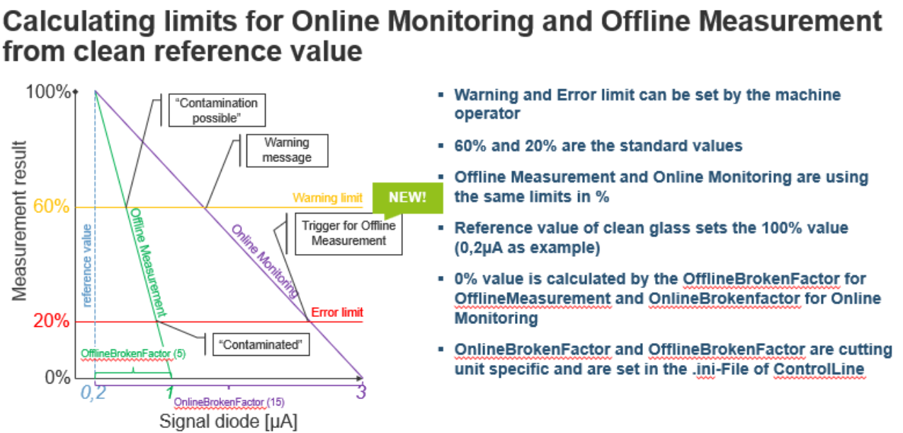
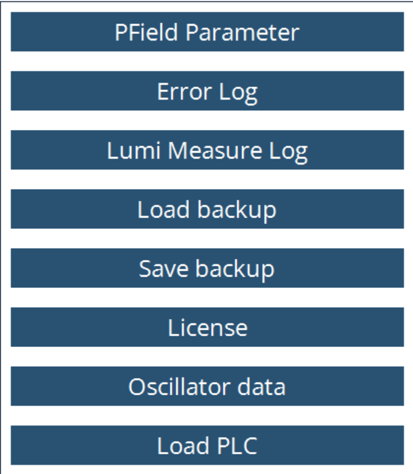

玻璃保护片监控
参数化
玻璃保护片监控是一个系统，用于监控玻璃保护片。它可能会阻止您生产低质量的零件，甚至 机床损坏。 行为定义如下：
-
当切割过程中玻璃保护片的质量值低于错误级别时：机床将停止加工，光束将关闭， 窗口将弹出在HMI的正面。
-
如果单击窗口上的 关闭 按钮，机床将继续 切割当前板材。在加工下一板材之前，它将执行 玻璃保护片测量。如果质量仍低于错误级别， 窗口将再次弹出。单击“关闭”将允许机床继续 加工，窗口将再次出现在板材的末尾。
-
如果玻璃从一开始——在切割第一个轮廓后——就被污染，机床将停止并执行玻璃保护片测量。如果 质量低于错误级别，将弹出一个窗口。单击 关闭 按钮将允许机床继续切割当前板材。 可以进行离线测量和在线测量：
| 离线测量 | 在线监控 | |
|---|---|---|
测量类型 |
固定测量条件 |
原位测量 |
触发 |
清洁参考值的相对限值 |
清洁参考值的相对限值 |
作用 |
以百分比表示的结果 |
在轮廓末端的反应 |
目的 |
防止产生材料废料 |
触发离线测量 |
离线测量：离线测量用于检查在稳定条件下的玻璃质量。在离线测量期间，将发射三个不同级别的激光功率，每个激光功率持续特定的时间段——通常为500毫秒。 在每个功率级别上测量玻璃的反射光， 计算标准化反射光度，并与使用相同方法获得的参考值进行比较。此计算也包含离线损坏系数，以确定玻璃质量。对于相同的 反射光度值，较高的损坏系数表示更好的玻璃质量。因此，只有当玻璃严重脏污时，才会发出警告或触发错误。
在线监控：在线测量用于检查切割过程中的玻璃质量。每当有激光输出时， 将计算一段时间内的反射光，低通滤波器被应用于此值。然后考虑在线损坏系数以确定 最终的玻璃质量。由于激光输出的不稳定性和来自切割板材的背反射光， 在线损坏系数将显著高于离线。
参数化在设置页面中完成：

亮度测量
保护窗口测量基于光度测量。 如果 条件为 清洁，则保护窗口状态良好，可以继续进行切割获得良好的切割结果。如果条件为 被污染，则保护窗口状态较差，建议更改保护窗口以 体验良好的切割结果。

根据质量值百分比的结果，清洁或更换玻璃保护片。
-
80%-90% → 清洁
-
< 80% → 更换
通过上述条目，X和Y轴向定位值移动。
运行程序将根据用户要求使用频率和占空比数据。功率参数预定义为500W、1000W和 1500W。
焦点直径、焦点距离和停留时间也已根据用户要求完成修改。程序运行时，可以监控输入的值。 指定的停留时间将保留程序，直到配置的停留时间耗尽 然后中止。
测量模式具有离线和参考数据。在离线选择中，用户可以运行程序 并检查保护窗口的状态。在参考选择中， 用户可以交叉验证质量和线性的数据和值，它可以使用保存选项保存。一般来说，当保护窗口较新、可提供精细的结果时，将选择使用参考选择。
当lumi测量程序运行时，它获取数据的日志，并可以 在*LumiMeasurelog.txt*通过路径 `C:\ProgramData\Metamation{APPNAME}\Log\Currentyear\Currentmonth\Currentday`或在用户界面中读取。


参考上述计算，将在MK文件中添加以下参数以 优化监控功能：
-
离线损坏系数
-
在线损坏系数
-
警告限制（百分比）
-
错误限制（百分比）
-
报告警告的延迟时间（以秒为单位）